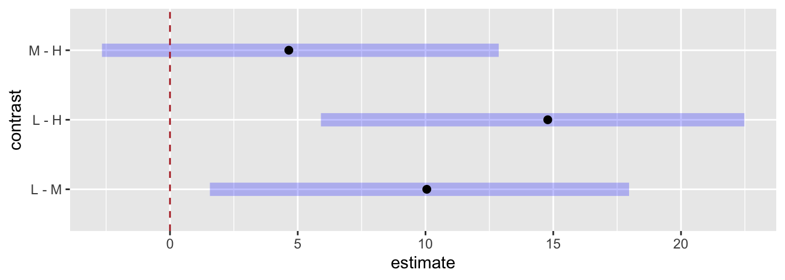

Practice Problems · Session 8
ANOVA: two variances, the F-ratio, Tukey, and posterior differences
Ungraded self-checks. Work each problem in your own R session before clicking the solution. These use different data and numbers than the homework on purpose — if you can do these cold, Homework 8 (and the midterm’s ANOVA questions) will feel routine.
Every problem here runs on typed-in or built-in data, so the only setup you need is:
Problem 1 · The pile of t-tests, quantified
Your department compares mean response times across five patrol sectors. A colleague proposes “keeping it simple”: a separate t-test on every pair of sectors, each at the usual 5% false-alarm risk.
- How many pairwise tests is that? (
choose()counts them.) - If all five sectors truly have the same mean, what is the probability that at least one test comes up “significant” anyway?
Solution
choose(5, 2) # pairwise tests among 5 groups[1] 101 - 0.95^choose(5, 2) # P(at least one false alarm across all of them)[1] 0.4012631Ten tests, and roughly a 40% chance of at least one bogus “significant” difference when nothing differs at all. That’s why ANOVA asks one omnibus question — are all five means plausibly equal? — at a single 5% risk, and saves the pairwise digging for an adjusted follow-up (Problem 4).
Problem 2 · Two variances, by hand
Dispatch pulls five response times (minutes) from each of three sectors — small on purpose, so you can see every number:
Compute each sector’s mean and variance, then the within-group variance (average of the three variances), the between-group variance (variance of the three means), and their ratio. What is the ratio telling you, in signal-and-noise terms?
Solution
# A tibble: 3 × 3
sector sector_mean sector_var
<fct> <dbl> <dbl>
1 Adams 8.4 1.3
2 Baker 13.4 1.3
3 Charlie 8.6 1.3[1] 1.3between_var[1] 8.013333between_var / within_var[1] 6.164103The sector means (8.4, 13.4, 8.6) are about 6 times more spread out than the chance bouncing inside sectors would produce — between dwarfs within, which is the signature of a real group difference. Between-group variance is the signal, within-group variance is the noise, and the ratio is your first, unscaled look at F.
Problem 3 · aov() and reading the F table
Run aov(minutes ~ sector, ...) on the same data and look at summary(). Then connect it to Problem 2: which table entry is your within-group variance? Why is Mean Sq for sector not 8.01? And what do F and p say?
Solution
Df Sum Sq Mean Sq F value Pr(>F)
sector 2 80.13 40.07 30.82 1.87e-05 ***
Residuals 12 15.60 1.30
---
Signif. codes: 0 '***' 0.001 '**' 0.01 '*' 0.05 '.' 0.1 ' ' 1- Mean Sq Residuals = 1.30 — the within-group variance from Problem 2, exactly.
-
Mean Sq sector = 40.07 = 5 × 8.01 — the between-group variance scaled by the group size. A 5-minute gap between means built on 5 calls each is stronger evidence than the same gap built on 2, so
aov()bakes the sample size into the signal. - F(2, 12) = 30.8 — which is 5 × our hand ratio of 6.16 — with p ≈ 0.00002: an F this large essentially never happens when the three sectors truly share a mean.
The F table is Problem 2’s two variances dressed up: same logic, with the group size folded into the signal.
Problem 4 · Real(ish) data: warpbreaks and Tukey
R ships warpbreaks: 54 industrial loom runs, recording how many times the yarn broke during each run under low, medium, or high tension (L/M/H, 18 runs each). Quality-control question: does mean breakage differ by tension setting?
Compute the group means, run the ANOVA, then TukeyHSD(). Which pairs differ? One pair shows no reliable difference — name it and report the interval that told you so.
Solution
tension mean_breaks sd_breaks n
1 L 36.38889 16.446487 18
2 M 26.38889 9.121009 18
3 H 21.66667 8.352527 18 Df Sum Sq Mean Sq F value Pr(>F)
tension 2 2034 1017.1 7.206 0.00175 **
Residuals 51 7199 141.1
---
Signif. codes: 0 '***' 0.001 '**' 0.01 '*' 0.05 '.' 0.1 ' ' 1TukeyHSD(warp_model) Tukey multiple comparisons of means
95% family-wise confidence level
Fit: aov(formula = breaks ~ tension, data = warpbreaks)
$tension
diff lwr upr p adj
M-L -10.000000 -19.55982 -0.4401756 0.0384598
H-L -14.722222 -24.28205 -5.1623978 0.0014315
H-M -4.722222 -14.28205 4.8376022 0.4630831F(2, 51) = 7.2, p ≈ .002 — the omnibus F says something differs. Tukey says what: M − L (−10.0, interval [−19.6, −0.4], p ≈ .04) and H − L (−14.7, interval [−24.3, −5.2], p ≈ .001) both exclude 0 — low tension breaks more yarn than either alternative. But H − M spans 0 ([−14.3, 4.8], p ≈ .46): no evidence medium and high differ. A significant omnibus F never means every pair differs — Tukey names the pairs while holding the family-wise false-alarm rate at 5%.
Problem 5 · The Bayesian version: brm() + emmeans() + pairs()
Fit the Bayesian twin of Problem 4’s model (expect the Compiling Stan program… pause — that’s normal, not a crash), then get the posterior pairwise differences. Which 95% HPD intervals cross zero, and does the Bayesian verdict match Tukey’s?
Solution
warp_bayes <- brm(breaks ~ tension, data = warpbreaks,
chains = 2, iter = 2000, seed = 705, refresh = 0)warp_post <- emmeans(warp_bayes, ~ tension)
warp_post tension emmean lower.HPD upper.HPD
L 36.6 30.2 41.8
M 26.4 20.1 31.8
H 21.6 16.3 27.2
Point estimate displayed: median
HPD interval probability: 0.95 pairs(warp_post) contrast estimate lower.HPD upper.HPD
L - M 10.05 1.56 18.0
L - H 14.79 5.91 22.5
M - H 4.65 -2.66 12.9
Point estimate displayed: median
HPD interval probability: 0.95 plot(pairs(warp_post)) +
geom_vline(xintercept = 0, linetype = 2, color = "firebrick")
L − M (≈ +10, HPD roughly [2, 18]) and L − H (≈ +14.7, roughly [7, 23]) exclude 0 — credible differences. M − H (≈ +4.7, roughly [−3, 13]) crosses 0 — zero remains a credible value, so no credible difference. Same verdict as Tukey, pair for pair. One nuance worth noticing: these Bayesian intervals are per-comparison, while Tukey deliberately widens its intervals to hold the family-wise rate — with only 3 contrasts the two land in the same place, but on borderline pairs they can disagree — worth watching for whenever you run both. When an HPD interval crosses zero, “no difference” is still on the table; when it doesn’t, the difference is credible.
Problem 6 · Audit the memo
A crime-analyst memo about the warpbreaks-style analysis contains these four sentences. Two are wrong. Find them, say why, and fix them.
“The omnibus test was significant, F(2, 51) = 7.2, p = .002, so all three tension settings differ from one another.”
“To be thorough, we also ran all three pairwise t-tests without adjustment and report those p-values instead of Tukey’s.”
“Tukey’s HSD keeps the family-wise false-alarm rate at 5% across all three comparisons.”
“Low tension averaged about 15 more breaks per run than high tension, 95% CI [5.2, 24.3].”
Solution
# Unadjusted pairwise p-values vs. Tukey's family-wise-adjusted ones:
pairwise.t.test(warpbreaks$breaks, warpbreaks$tension, p.adjust.method = "none")
Pairwise comparisons using t tests with pooled SD
data: warpbreaks$breaks and warpbreaks$tension
L M
M 0.0147 -
H 0.0005 0.2386
P value adjustment method: none M-L H-L H-M
0.038459768 0.001431503 0.463083097 (a) is wrong. A significant omnibus F licenses only “at least one mean differs” — and Tukey showed H vs. M does not differ. Fix: “…so not all three tension means are equal; pairwise comparisons follow.”
(b) is wrong. Reporting unadjusted pairwise p-values quietly triples the false-alarm exposure — Problem 1’s pile-of-t-tests problem in miniature. Compare the two outputs above: every unadjusted p is smaller than its Tukey counterpart (e.g., M vs. L: .015 unadjusted vs. .038 adjusted) precisely because the unadjusted version ignores the other tests being run. Fix: report the Tukey-adjusted results.
(c) and (d) are fine — (d) is just Tukey’s H − L row with the sign flipped, magnitude and interval intact. The concept to keep: per-comparison p-values and family-wise p-values answer different questions, and after a significant F, the family-wise one is the honest one.